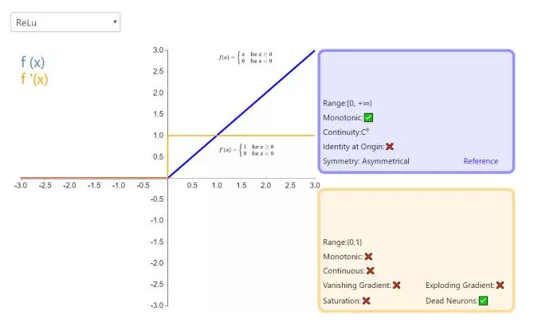
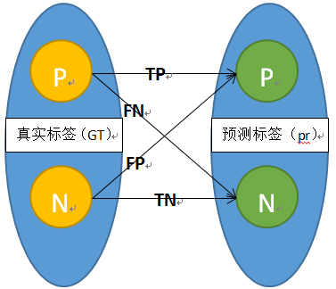
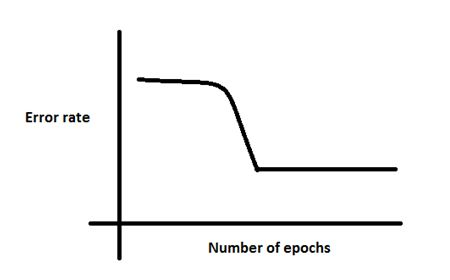

为了求职笔试面试，需恶补基础、算法原理，于是仔细研读了七月在线发布的BAT机器学习面试1000题系列，也添加了一些自己的理解或来自其他博客的答案，以下内容均来自BAT机器学习面试1000题系列。该文为本人的阅读笔记，主要是为了记忆和自查。
101. 解释对偶的概念。机器学习 ML基础 易
一个优化问题可以从两个角度进行考察，一个是primal(原始)问题，一个是dual(对偶)问题，就是对偶问题，一般情况下对偶问题给出主问题最优值的下界，在强对偶性成立的情况下由对偶问题可以得到主问题的最优下界，对偶问题是凸优化问题，可以进行较好的求解，SVM中就是将primal问题转换为dual问题进行求解，从而进一步引入核函数的思想。
102. 如何进行特征选择？机器学习 ML基础 中
特征选择是一个重要的数据预处理过程，主要有两个原因：一是减少特征数量、降维，使模型泛化能力更强，减少过拟合;二是增强对特征和特征值之间的理解。
常见的特征选择方式：
1. 去除方差较小的特征
2. 正则化。Ｌ1正则化能够生成稀疏的模型。L2正则化的表现更加稳定，由于有用的特征往往对应系数非零。
3. 随机森林，对于分类问题，通常采用基尼不纯度或者信息增益，对于回归问题，通常采用的是方差或者最小二乘拟合。一般不需要feature engineering、调参等繁琐的步骤。它的两个主要问题，1是重要的特征有可能得分很低（关联特征问题），2是这种方法对特征变量类别多的特征越有利（偏向问题）。
4. 稳定性选择。是一种基于二次抽样和选择算法相结合较新的方法，选择算法可以是回归、SVM或其他类似的方法。它的主要思想是在不同的数据子集和特征子集上运行特征选择算法，不断的重复，最终汇总特征选择结果，比如可以统计某个特征被认为是重要特征的频率（被选为重要特征的次数除以它所在的子集被测试的次数）。理想情况下，重要特征的得分会接近100%。稍微弱一点的特征得分会是非0的数，而最无用的特征得分将会接近于0。
103. 数据预处理。机器学习 ML基础 易
1. 缺失值，填充缺失值fillna：
i. 离散：None,
ii. 连续：均值。
iii. 缺失值太多，则直接去除该列。
2. 连续值：离散化。有的模型（如决策树）需要离散值
3. 对定量特征二值化。核心在于设定一个阈值，大于阈值的赋值为1，小于等于阈值的赋值为0。
4. 皮尔逊相关系数，去除高度相关的列
104. 简单说说特征工程。机器学习 ML基础 中
105. 你知道有哪些数据处理和特征工程的处理？机器学习 ML应用 中
106. 请对比下Sigmoid、Tanh、ReLu这三个激活函数。深度学习 DL基础 中
sigmoid函数又称logistic函数，应用在Logistic回归中。logistic回归的目的是从特征学习出一个0/1分类模型，而这个模型是将特性的线性组合作为自变量，由于自变量的取值范围是负无穷到正无穷。因此，使用logistic函数将自变量映射到(0,1)上，映射后的值被认为是属于y=1的概率。
假设函数：$h_\theta (x) = g(\theta^Tx) = \frac{1}{1+e^{-\theta^Tx}}$
其中x是n维特征向量，函数g就是logistic函数。而$g(z) = \frac{1}{e^{-z}}$函数图像：
可以看到，将无穷映射到了(0,1)。
而假设函数就是特征属于y=1的概率。
从而，当我们要判别一个新来的特征属于哪个类时，只需求$h_\theta(x)$即可，若$h_\theta(x)$大于0.5就是y=1的类，反之属于y=0类。
tanh激活函数：
relu激活函数：

但sigmoid函数有如下几个缺点：
a). 正向计算包含指数，反向传播的导数也包含指数计算和除法运算，因而计算复杂度很高。
b). 输出的均值非0。这样使得网络容易发生梯度消失或梯度爆炸。这也是batch normalization要解决的问题。
c). 假如sigmoid函数为f(x)，那么f’(x)=f(x)(1-f(x))，因为f(x)输出在0-1之间，那么f’(x)恒大于0。 这就导致全部的梯度的正负号都取决于损失函数上的梯度。这样容易导致训练不稳定，参数一荣俱荣一损俱损。
d). 同样的，f’(x)=f(x)(1-f(x))，因为f(x)输出在0-1之间，那么f’(x)输出也在0-1之间，当层次比较深时，底层的导数就是很多在0-1之间的数相乘，从而导致了梯度消失问题。
对于tanh来说，同sigmoid类似，但是输出值在-1到1之间，均值为0，是其相对于sigmoid的提升。但是因为输出在-1，1之间，因而输出不能被看做是概率。
更多参考资源 | 从ReLU到Sinc，26种神经网络激活函数可视化
对于ReLU来说，相对于sigmoid和tanh来说，有如下优点：
a). 计算量下，没有指数和除法运算。
b). 不会饱和，因为在x>0的情况下，导数恒等于1
d). 收敛速度快，在实践中可以得知，它的收敛速度是sigmoid的6倍。
e). Relu会使一部分神经元的输出为0，这样就造成了网络的稀疏性，并且减少了参数的相互依存关系，缓解了过拟合问题的发生
但是Relu也有缺点，缺点在于，
如果有一个特别大的导数经过神经单元使得输入变得小于0，这样会使得这个单元永远得不到参数更新，因为输入小于0时导数也是0. 这就形成了很多dead cell(失活)。
107. Sigmoid、Tanh、ReLu这三个激活函数有什么缺点或不足，有没改进的激活函数。深度学习 DL基础 中
sigmoid、Tanh、ReLU的缺点在见上题，@张雨石：为了解决ReLU的dead cell的情况，发明了Leaky Relu， 即在输入小于0时不让输出为0，而是乘以一个较小的系数，从而保证有导数存在。其他改进如：PRelu、RRelu、RReLU同样的目的，还有一个ELU，函数示意图如下。
还有一个激活函数是Maxout，即使用两套w,b参数，输出较大值。本质上Maxout可以看做Relu的泛化版本，因为如果一套w,b全都是0的话，那么就是普通的ReLU。Maxout可以克服Relu的缺点，但是参数数目翻倍。
面试笔试整理3：深度学习机器学习面试问题准备（必会）
108. 怎么理解决策树、xgboost能处理缺失值？而有的模型(svm)对缺失值比较敏感。机器学习 ML模型 中
怎么理解决策树、xgboost能处理缺失值？而有的模型(svm)对缺失值比较敏感?
109. 为什么引入非线性激励函数？深度学习 DL基础 中
@张雨石：第一，对于神经网络来说，网络的每一层相当于f(wx+b)=f(w’x)，对于线性函数，其实相当于f(x)=x，那么在线性激活函数下，每一层相当于用一个矩阵去乘以x，那么多层就是反复的用矩阵去乘以输入。根据矩阵的乘法法则，多个矩阵相乘得到一个大矩阵。所以线性激励函数下，多层网络与一层网络相当。比如，两层的网络f(W1f(W2x))=W1W2x=Wx。
第二，非线性变换是深度学习有效的原因之一。原因在于非线性相当于对空间进行变换，变换完成后相当于对*问题空间进行简化，原来线性不可解的问题现在变得可以解了。
下图可以很形象的解释这个问题，左图用一根线是无法划分的。经过一系列变换后，就变成线性可解的问题了。
请问人工神经网络中的activation function的作用具体是什么？为什么ReLu要好过于tanh和sigmoid function?
110. 请问人工神经网络中为什么ReLu要好过于tanh和sigmoid function？深度学习 DL基础 中
见以上问题
111. 为什么LSTM模型中既存在sigmoid又存在tanh两种激活函数？深度学习 DL模型 难
为什么不是选择统一一种sigmoid或者tanh，而是混合使用呢？这样的目的是什么？为什么LSTM模型中既存在sigmoid又存在tanh两种激活函数？
二者目的不一样
a). sigmoid 用在了各种gate上，产生0~1之间的值，这个一般只有sigmoid最直接了。
b). tanh 用在了状态和输出上，是对数据的处理，这个用其他激活函数或许也可以。
112. 衡量分类器的好坏？机器学习 ML基础 中
面试笔试整理3：深度学习机器学习面试问题准备（必会）这里首先要知道TP、FN（真的判成假的）、FP（假的判成真）、TN四种（可以画一个表格）。

几种常用的指标：
准确率: precision = TP/(TP+FP) = TP/~P （~p为预测为真的数量）
召回率: recall = TP/(TP+FN) = TP/ P
F1值: 2/F1 = 1/recall + 1/precision
ROC曲线: ROC空间是一个以伪阳性率（FPR，false positive rate）为X轴，真阳性率（TPR, true positive rate）为Y轴的二维坐标系所代表的平面。其中真阳率TPR = TP / P = recall， 伪阳率FPR = FP / N
AUC: ROC曲线与坐标轴围成的面积。
113. 机器学习和统计里面的auc的物理意义是啥？机器学习 ML基础 中
114. 观察增益gain, alpha和gamma越大，增益越小？机器学习 ML基础 中
@AntZ：xgboost寻找分割点的标准是最大化gain. 考虑传统的枚举每个特征的所有可能分割点的贪心法效率太低，xgboost实现了一种近似的算法。大致的思想是根据百分位法列举几个可能成为分割点的候选者，然后从候选者中计算Gain按最大值找出最佳的分割点。它的计算公式分为四项, 可以由正则化项参数调整(lamda为叶子权重平方和的系数, gama为叶子数量):
第一项是假设分割的左孩子的权重分数, 第二项为右孩子, 第三项为不分割总体分数, 最后一项为引入一个节点的复杂度损失
由公式可知, gama越大gain越小, lamda越大, gain可能小也可能大.
原问题是alpha而不是lambda, 这里paper上没有提到, xgboost实现上有这个参数. 上面是我从paper上理解的答案,下面是搜索到的:
https://zhidao.baidu.com/question/2121727290086699747.html?fr=iks&word=xgboost+lamda&ie=gbk
lambda[默认1]权重的L2正则化项。(和Ridge regression类似)。 这个参数是用来控制XGBoost的正则化部分的。虽然大部分数据科学家很少用到这个参数，但是这个参数在减少过拟合上还是可以挖掘出更多用处的。11、alpha[默认1]权重的L1正则化项。(和Lasso regression类似)。 可以应用在很高维度的情况下，使得算法的速度更快。
gamma[默认0]在节点分裂时，只有分裂后损失函数的值下降了，才会分裂这个节点。Gamma指定了节点分裂所需的最小损失函数下降值。 这个参数的值越大，算法越保守。
115. 什麽造成梯度消失问题? 推导一下。深度学习 DL基础 中
- Yes you should understand backdrop－Andrej Karpathy
- How does the ReLu solve the vanishing gradient problem?
- 神经网络的训练中，通过改变神经元的权重，使网络的输出值尽可能逼近标签以降低误差值，训练普遍使用BP算法，核心思想是，计算出输出与标签间的损失函数值，然后计算其相对于每个神经元的梯度，进行权值的迭代。
- 梯度消失会造成权值更新缓慢，模型训练难度增加。造成梯度消失的一个原因是，许多激活函数将输出值挤压在很小的区间内，在激活函数两端较大范围的定义域内梯度为0，造成学习停止。

116. 什么是梯度消失和梯度爆炸？深度学习 DL基础 中
@寒小阳，反向传播中链式法则带来的连乘，如果有数很小趋于0，结果就会特别小（梯度消失）；如果数都比较大，可能结果会很大（梯度爆炸）。
@单车，下段来源：神经网络训练中的梯度消失与梯度爆炸
层数比较多的神经网络模型在训练时也是会出现一些问题的，其中就包括梯度消失问题（gradient vanishing problem）和梯度爆炸问题（gradient exploding problem）。梯度消失问题和梯度爆炸问题一般随着网络层数的增加会变得越来越明显。
例如，对于下图所示的含有3个隐藏层的神经网络，梯度消失问题发生时，接近于输出层的hidden layer 3等的权值更新相对正常，但前面的hidden layer 1的权值更新会变得很慢，导致前面的层权值几乎不变，仍接近于初始化的权值，这就导致hidden layer 1相当于只是一个映射层，对所有的输入做了一个同一映射，这是此深层网络的学习就等价于只有后几层的浅层网络的学习了。
而这种问题为何会产生呢？以下图的反向传播为例（假设每一层只有一个神经元且对于每一层$y_i=\sigma\left(z_i\right)=\sigma\left(w_ix_i+b_i\right)$，其中$\sigma$为sigmoid函数）
可以推导出 而sigmoid的导数$\sigma’\left(x\right)$如下图：
可见，$\sigma’\left(x\right)$的最大值为$\frac{1}{4}$，而我们初始化的网络权值|w|通常都小于1，因此$|\sigma’\left(z\right)w|\leq\frac{1}{4}$，因此对于上面的链式求导，层数越多，求导结果$\frac{\partial C}{\partial b_1}$越小，因而导致 梯度消失的情况出现。
这样，梯度爆炸问题的出现原因就显而易见了，即$|\sigma’\left(z\right)w|>1$，也就是w比较大的情况。但对于使用sigmoid激活函数来说，这种情况比较少。因为$\sigma’\left(z\right)$的大小也与w有关$（z=wx+b）$，除非该层的输入值x在一直一个比较小的范围内。
其实梯度爆炸和梯度消失问题都是因为网络太深，网络权值更新不稳定造成的，本质上是因为梯度反向传播中的连乘效应。对于更普遍的梯度消失问题，可以考虑用ReLU激活函数取代sigmoid激活函数。另外，LSTM的结构设计也可以改善RNN中的梯度消失问题。117. 如何解决梯度消失和梯度膨胀？深度学习 DL基础 中
（1）梯度消失：
根据链式法则，如果每一层神经元对上一层的输出的偏导乘上权重结果都小于1的话，那么即使这个结果是0.99，在经过足够多层传播之后，误差对输入层的偏导会趋于0
可以采用ReLU激活函数有效的解决梯度消失的情况，也可以用Batch Normalization解决这个问题。关于深度学习中 Batch Normalization为什么效果好？参见：深度学习中 Batch Normalization为什么效果好？
（2）梯度膨胀
根据链式法则，如果每一层神经元对上一层的输出的偏导乘上权重结果都大于1的话，在经过足够多层传播之后，误差对输入层的偏导会趋于无穷大
可以通过激活函数来解决，或用Batch Normalization解决这个问题。
118. 推导下反向传播Backpropagation。深度学习 DL基础 难
@我愛大泡泡，来源：面试笔试整理3：深度学习机器学习面试问题准备（必会）
首先，要理解反向传播的基本原理，那就是求导的链式法则。
反映到神经网络里：
下面从损失函数开始用公式进行推导。
反向传播是在求解损失函数L对参数w求导时候用到的方法，目的是通过链式法则对参数进行一层一层的求导。这里重点强调：要将参数进行随机初始化而不是全部置0，否则所有隐层的数值都会与输入相关，这称为对称失效。
大致过程是:
a). 首先前向传导计算出所有节点的激活值和输出值，
$z^{(l +1)} = W^{(l)}a^{(l)} + b^{(l)}$
$ａ^{(l +1)} = f(z^{(l +1)})$
b). 计算整体损失函数：
c). 然后针对第L层的每个节点计算出残差（这里是因为UFLDL中说的是残差，本质就是整体损失函数对每一层激活值Z的导数），所以要对W求导只要再乘上激活函数对W的导数即可
119. SVD和PCA。机器学习 ML模型 中
PCA的理念是使得数据投影后的方差最大，找到这样一个投影向量，满足方差最大的条件即可。而经过了去除均值的操作之后，就可以用SVD分解来求解这样一个投影向量，选择特征值最大的方向。
PCA的本质是对于一个以矩阵为参数的分布进行似然估计，而SVD是矩阵近似的有效手段。
详见：PCA数据降维和SVD降维有什么区别？
120. 数据不平衡问题。机器学习 ML基础 易
这主要是由于数据分布不平衡造成的。解决方法如下：
1. 采样，对小样本加噪声采样，对大样本进行下采样
2. 数据生成，利用已知样本生成新的样本
3. 进行特殊的加权，如在Adaboost中或者SVM中
4. 采用对不平衡数据集不敏感的算法
5. 改变评价标准：用AUC/ROC来进行评价
6. 采用Bagging/Boosting/ensemble等方法
7. 在设计模型的时候考虑数据的先验分布
121. 简述神经网络的发展历史。深度学习 DL基础 中
1949年Hebb提出了神经心理学学习范式——Hebbian学习理论
1952年，IBM的Arthur Samuel写出了西洋棋程序
1957年，Rosenblatt的感知器算法是第二个有着神经系统科学背景的机器学习模型.
3年之后，Widrow因发明Delta学习规则而载入ML史册，该规则马上就很好的应用到了感知器的训练中
感知器的热度在1969被Minskey一盆冷水泼灭了。他提出了著名的XOR问题，论证了感知器在类似XOR问题的线性不可分数据的无力。
尽管BP的思想在70年代就被Linnainmaa以“自动微分的翻转模式”被提出来，但直到1981年才被Werbos应用到多层感知器(MLP)中，NN新的大繁荣。
1991年的Hochreiter和2001年的Hochreiter的工作，都表明在使用BP算法时，NN单元饱和之后会发生梯度损失。又发生停滞。
时间终于走到了当下，随着计算资源的增长和数据量的增长。一个新的NN领域——深度学习出现了。
简言之，MP模型+sgn—->单层感知机（只能线性）+sgn— Minsky 低谷 —>多层感知机+BP+sigmoid—- (低谷) —>深度学习+pre-training+ReLU/sigmoid
122. 深度学习常用方法。深度学习 DL基础 中
@SmallisBig，来源：机器学习岗位面试问题汇总 之 深度学习
a). 全连接DNN（相邻层相互连接、层内无连接）：
b). AutoEncoder(尽可能还原输入)、Sparse Coding（在AE上加入L1规范）、RBM（解决概率问题）—–>特征探测器——>栈式叠加 贪心训练
c). RBM—->DBN
d). 解决全连接DNN的全连接问题—–>CNN
e). 解决全连接DNN的无法对时间序列上变化进行建模的问题—–>RNN—解决时间轴上的梯度消失问题——->LSTM
@张雨石：现在在应用领域应用的做多的是DNN，CNN和RNN。
DNN是传统的全连接网络，可以用于广告点击率预估，推荐等。其使用embedding的方式将很多离散的特征编码到神经网络中，可以很大的提升结果。
CNN主要用于计算机视觉(Computer Vision)领域，CNN的出现主要解决了DNN在图像领域中参数过多的问题。同时，CNN特有的卷积、池化、batch normalization、Inception、ResNet、DeepNet等一系列的发展也使得在分类、物体检测、人脸识别、图像分割等众多领域有了长足的进步。同时，CNN不仅在图像上应用很多，在自然语言处理上也颇有进展，现在已经有基于CNN的语言模型能够达到比LSTM更好的效果。在最新的AlphaZero中，CNN中的ResNet也是两种基本算法之一。
GAN是一种应用在生成模型的训练方法，现在有很多在CV方面的应用，例如图像翻译，图像超分辨率、图像修复等等。
RNN主要用于自然语言处理(Natural Language Processing，NLP)领域，用于处理序列到序列的问题。普通RNN会遇到梯度爆炸和梯度消失的问题。所以现在在NLP领域，一般会使用LSTM模型。在最近的机器翻译领域，Attention作为一种新的手段，也被引入进来。
除了DNN、RNN和CNN外， 自动编码器(AutoEncoder)、稀疏编码(Sparse Coding)、深度信念网络(DBM)、限制玻尔兹曼机(RBM)也都有相应的研究。
123. 神经网络模型（Neural Network）因受人类大脑的启发而得名。深度学习 DL基础 易
124. 神经网络由许多神经元（Neuron）组成，每个神经元接受一个输入，对输入进行处理后给出一个输出，如下图所示。请问下列关于神经元的描述中，哪一项是正确的？
A 每个神经元可以有一个输入和一个输出 B 每个神经元可以有多个输入和一个输出 C 每个神经元可以有一个输入和多个输出 D 每个神经元可以有多个输入和多个输出 E 上述都正确
答案：（E）
每个神经元可以有一个或多个输入，和一个或多个输出。
125. 下图是一个神经元的数学表示。深度学习 DL基础 易
- x1, x2,…, xN：表示神经元的输入。可以是输入层的实际观测值，也可以是某一个隐藏层（Hidden Layer）的中间值
- w1, w2,…,wN：表示每一个输入的权重
- bi：表示偏差单元/偏移量（bias unit）。作为常数项加到激活函数的输入当中，类似截距（Intercept）
- a：作为神经元的激励函数（Activation），可以表示为
- y：神经元输出
考虑上述标注，线性等式（y = mx + c）可以被认为是属于神经元吗：(是)
126. 在一个神经网络中，知道每一个神经元的权重和偏差是最重要的一步。如果知道了神经元准确的权重和偏差，便可以近似任何函数，但怎么获知每个神经的权重和偏移呢？深度学习 DL基础 易
A 搜索每个可能的权重和偏差组合，直到得到最佳值 B 赋予一个初始值，然后检查跟最佳值的差值，不断迭代调整权重
C 随机赋值，听天由命 D 以上都不正确的
选项B是对梯度下降的描述。
127. 梯度下降算法的正确步骤是什么？深度学习 DL基础 易
1. 计算预测值和真实值之间的误差
2. 重复迭代，直至得到网络权重的最佳值
3. 把输入传入网络，得到输出值
4. 用随机值初始化权重和偏差
5. 对每一个产生误差的神经元，调整相应的（权重）值以减小误差
答案：4, 3, 1, 5, 2
128. 已知：- 大脑是有很多个叫做神经元的东西构成，神经网络是对大脑的简单的数学表达。- 每一个神经元都有输入、处理函数和输出。- 神经元组合起来形成了网络，可以拟合任何函数。- 为了得到最佳的神经网络，我们用梯度下降方法不断更新模型。给定上述关于神经网络的描述，什么情况下神经网络模型被称为深度学习模型？深度学习 DL基础 易
A 加入更多层，使神经网络的深度增加 B 有维度更高的数据 C 当这是一个图形识别的问题时 D 以上都不正确
更多层意味着网络更深。没有严格的定义多少层的模型才叫深度模型，目前如果有超过2层的隐层，那么也可以及叫做深度模型。
129. 使用CNN时，是否需要对输入进行旋转、平移、缩放等预处理？深度学习 DL基础 易
（需要）把数据传入神经网络之前需要做一系列数据预处理（也就是旋转、平移、缩放）工作，神经网络本身不能完成这些变换。
130. 下面哪项操作能实现跟神经网络中Dropout的类似效果？（B）深度学习 DL基础 易
A Boosting B Bagging C Stacking D Mapping
Dropout可以认为是一种极端的Bagging，每一个模型都在单独的数据上训练，同时，通过和其他模型对应参数的共享，从而实现模型参数的高度正则化。
131. 下列哪一项在神经网络中引入了非线性？深度学习 DL基础 易
A 随机梯度下降 B 修正线性单元（ReLU） C 卷积函数 D 以上都不正确
修正线性单元（ReLU）是非线性的激活函数。
132. 在训练神经网络时，损失函数(loss)在最初的几个epochs时没有下降，可能的原因是？深度学习 DL基础 易

A 学习率(learning rate)太低 B 正则参数太高 C 陷入局部最小值 D 以上都有可能
133. 下列哪项关于模型能力（model capacity）的描述是正确的？（指神经网络模型能拟合复杂函数的能力）深度学习 DL基础 易
A 隐藏层层数增加，模型能力增加 B Dropout的比例增加，模型能力增加 C 学习率增加，模型能力增加 D 都不正确
134. 如果增加多层感知机（Multilayer Perceptron）的隐藏层层数，分类误差便会减小。这种陈述正确还是错误？深度学习 DL基础 易
（错误）并不总是正确。层数增加可能导致过拟合，从而可能引起错误增加。模型退化问题
135. 构建一个神经网络，将前一层的输出和它自身作为输入。深度学习 DL模型 易

下列哪一种架构有反馈连接？
A 循环神经网络
B 卷积神经网络
C 限制玻尔兹曼机
D 都不是
136. 在感知机中（Perceptron）的任务顺序是什么？深度学习 DL基础 易
1. 随机初始化感知机的权重
2. 去到数据集的下一批（batch）
3. 如果预测值和输出不一致，则调整权重
4. 对一个输入样本，计算输出值
答案：1->4->3->2
137. 假设你需要调整参数来最小化代价函数（cost function），会使用下列哪项技术？深度学习 DL基础 易
A． 穷举搜索 B． 随机搜索 C． Bayesian优化 D． 梯度下降
138. 在下面哪种情况下，一阶梯度下降不一定正确工作（可能会卡住）？深度学习 DL基础 易
答案：B 这是鞍点（Saddle Point）的梯度下降的经典例子。另，本题来源于：Questions to test a data scientist on basics of Deep Learning (along with solution)。
139. 图显示了训练过的3层卷积神经网络准确度，与参数数量(特征核的数量)的关系。深度学习 DL基础 易
从图中趋势可见，如果增加神经网络的宽度，精确度会增加到一个特定阈值后，便开始降低。造成这一现象的可能原因是什么？
A 即使增加卷积核的数量，只有少部分的核会被用作预测
B 当卷积核数量增加时，神经网络的预测能力（Power）会降低
C 当卷积核数量增加时，导致过拟合
D 以上都不正确
140. 假设我们有一个如下图所示的隐藏层。隐藏层在这个网络中起到了一定的降纬作用。假如现在我们用另一种维度下降的方法，比如说主成分分析法(PCA)来替代这个隐藏层。 深度学习 DL基础 易
那么，这两者的输出效果是一样的吗？(不一样)，PCA 提取的是数据分布方差比较大的方向，隐藏层可以提取有预测能力的特征
141. 下列哪个函数不可以做激活函数？深度学习 DL基础 易
A. y = tanh(x) B. y = sin(x) C. y = max(x,0) D. y = 2x
激活函数特性：非线性、可导、特定区域。
142. 下列哪个神经网络结构会发生权重共享？深度学习 DL模型 易
A.卷积神经网络 B.循环神经网络 C.全连接神经网络 D.选项A和B
143. 批规范化(Batch Normalization)的好处都有啥？深度学习 DL基础 中
A.在将所有的输入传递到下一层之前对其进行归一化（更改）
B.它将权重的归一化平均值和标准差
C.它是一种非常有效的反向传播(BP)方法
D.这些均不是
144. 在一个神经网络中，下面哪种方法可以用来处理过拟合？ 深度学习 DL基础 易
A Dropout
B 分批归一化(Batch Normalization)
C 正则化(regularization)
D 都可以
145. 如果我们用了一个过大的学习速率会发生什么？深度学习 DL基础 易
A 神经网络会收敛 B 不好说 C 都不对 D 神经网络不会收敛
146. 下图所示的网络用于训练识别字符H和T，如下所示（深度学习 DL基础 易）：
网络的输出是什么？
D.可能是A或B，取决于神经网络的权重设置
不知道神经网络的权重和偏差是什么，则无法判定它将会给出什么样的输出。
147. 假设我们已经在ImageNet数据集(物体识别)上训练好了一个卷积神经网络。然后给这张卷积神经网络输入一张全白的图片。对于这个输入的输出结果为任何种类的物体的可能性都是一样的，对吗？深度学习 DL模型 中
A 对的 B 不知道 C 看情况 D 不对
答案：D，已经训练好的卷积神经网络, 各个神经元已经精雕细作完工, 对于全白图片的输入, 其j层层激活输出给最后的全连接层的值几乎不可能恒等, 再经softmax转换之后也不会相等, 所以”输出结果为任何种类的等可能性一样”也就是softmax的每项均相等, 这个概率是极低的。
148. 当在卷积神经网络中加入池化层(pooling layer)时，变换的不变性会被保留，是吗？深度学习 DL模型 中
答案：（C） 池化算法比如取最大值/取平均值等, 都是输入数据旋转后结果不变, 所以多层叠加后也有这种不变性。(降维/尺度不变性)
149. 当数据过大以至于无法在RAM中同时处理时，哪种梯度下降方法更加有效？ 深度学习 DL基础 易
A 随机梯度下降法(Stochastic Gradient Descent) B 不知道 C 整批梯度下降法(Full Batch Gradient Descent) D 都不是
梯度下降法分随机梯度下降（SGD）(每次用一个样本)、小批量梯度下降法(每次用一小批样本算出总损失, 因而反向传播的梯度折中)、全批量梯度下降法则一次性使用全部样本。这三个方法, 对于全体样本的损失函数曲面来说, 梯度指向一个比一个准确. 但是在工程应用中,受到内存/磁盘IO的吞吐性能制约, 若要最小化梯度下降的实际运算时间, 需要在梯度方向准确性和数据传输性能之间取得最好的平衡. 所以, 对于数据过大以至于无法在RAM中同时处理时, RAM每次只能装一个样本, 那么只能选随机梯度下降法。
150. 下图是一个利用sigmoid函数作为激活函数的含四个隐藏层的神经网络训练的梯度下降图。这个神经网络遇到了梯度消失的问题。下面哪个叙述是正确的？ 深度学习 DL基础 中
A. 第一隐藏层对应D，第二隐藏层对应C，第三隐藏层对应B，第四隐藏层对应A
B. 第一隐藏层对应A，第二隐藏层对应C，第三隐藏层对应B，第四隐藏层对应D
C. 第一隐藏层对应A，第二隐藏层对应B，第三隐藏层对应C，第四隐藏层对应D
D. 第一隐藏层对应B，第二隐藏层对应D，第三隐藏层对应C，第四隐藏层对应A
由于反向传播算法进入起始层，学习能力降低，这就是梯度消失。换言之，梯度消失是梯度在前向传播中逐渐减为0, 按照图标题所说, 四条曲线是4个隐藏层的学习曲线, 那么第一层梯度最高(损失函数曲线下降明显), 最后一层梯度几乎为零(损失函数曲线变成平直线). 所以D是第一层, A是最后一层。
151. 对于一个分类任务，如果开始时神经网络的权重不是随机赋值的，而是都设成0，下面哪个叙述是正确的？ 深度学习 DL基础 易
A 其他选项都不对
B 没啥问题，神经网络会正常开始训练
C 神经网络可以训练，但是所有的神经元最后都会变成识别同样的东西
D 神经网络不会开始训练，因为没有梯度改变
令所有权重都初始化为0这个一个听起来还蛮合理的想法也许是一个我们假设中最好的一个假设了, 但结果是错误的，因为如果神经网络计算出来的输出值都一个样，那么反向传播算法计算出来的梯度值一样，并且参数更新值也一样(w=w−α∗dw)。更一般地说，如果权重初始化为同一个值，网络即是对称的, 最终所有的神经元最后都会变成识别同样的东西。
152. 下图显示，当开始训练时，误差一直很高，这是因为神经网络在往全局最小值前进之前一直被卡在局部最小值里。为了避免这种情况，我们可以采取下面哪种策略？深度学习 DL基础 易
A 改变学习速率，比如一开始的几个训练周期不断更改学习速率
B 一开始将学习速率减小10倍，然后用动量项(momentum)
C 增加参数数目，这样神经网络就不会卡在局部最优处
D 其他都不对
选项A可以将陷于局部最小值的神经网络提取出来。
153. 对于一个图像识别问题(在一张照片里找出一只猫)，下面哪种神经网络可以更好地解决这个问题？ 深度学习 DL基础 易
A 循环神经网络 B 感知机 C 多层感知机 D 卷积神经网络
卷积神经网络将更好地适用于图像相关问题，因为考虑到图像附近位置变化的固有性质(局部相关性)。
154. 假设在训练中我们突然遇到了一个问题，在几次循环之后，误差瞬间降低
你认为数据有问题，于是你画出了数据并且发现也许是数据的偏度过大造成了这个问题。
你打算怎么做来处理这个问题？深度学习 DL基础 易
A 对数据作归一化 B 对数据取对数变化 C 都不对 D 对数据作主成分分析(PCA)和归一化
首先您将相关的数据去掉，然后将其置零。具体来说，误差瞬间降低, 一般原因是多个数据样本有强相关性且突然被拟合命中, 或者含有较大方差数据样本突然被拟合命中. 所以对数据作主成分分析(PCA)和归一化能够改善这个问题。
155. 下面那个决策边界是神经网络生成的？ 深度学习 DL基础 易
A A B D C C D B E 以上都有
神经网络可以逼近方式拟合任意函数, 所以以上图都可能由神经网络通过监督学习训练得到决策边界。
156. 在下图中，我们可以观察到误差出现了许多小的”涨落”。 这种情况我们应该担心吗？深度学习 DL基础 易
A 需要，这也许意味着神经网络的学习速率存在问题
B 不需要，只要在训练集和交叉验证集上有累积的下降就可以了
C 不知道
D 不好说
选项B是正确的，为了减少这些“起伏”，可以尝试增加批尺寸(batch size)。具体来说，在曲线整体趋势为下降时, 为了减少这些“起伏”，可以尝试增加批尺寸(batch size)以缩小batch综合梯度方向摆动范围. 当整体曲线趋势为平缓时出现可观的“起伏”, 可以尝试降低学习率以进一步收敛. “起伏”不可观时应该提前终止训练以免过拟合。
157. 在选择神经网络的深度时，下面那些参数需要考虑？深度学习 DL基础 易
1 神经网络的类型(如MLP,CNN)
2 输入数据
3 计算能力(硬件和软件能力决定)
4 学习速率
5 映射的输出函数
A 1,2,4,5 B 2,3,4,5 C 都需要考虑 D 1,3,4,5
所有上述因素对于选择神经网络模型的深度都是重要的。特征抽取所需分层越多, 输入数据维度越高, 映射的输出函数非线性越复杂, 所需深度就越深. 另外为了达到最佳效果, 增加深度所带来的参数量增加, 也需要考虑硬件计算能力和学习速率以设计合理的训练时间。
158. 考虑某个具体问题时，你可能只有少量数据来解决这个问题。不过幸运的是你有一个类似问题已经预先训练好的神经网络。可以用下面哪种方法来利用这个预先训练好的网络？ 深度学习 DL基础 易
A 把除了最后一层外所有的层都冻住，重新训练最后一层
B 对新数据重新训练整个模型
C 只对最后几层进行调参(fine tune)
D 对每一层模型进行评估，选择其中的少数来用
如果有个预先训练好的神经网络, 就相当于网络各参数有个很靠谱的先验代替随机初始化. 若新的少量数据来自于先前训练数据(或者先前训练数据量很好地描述了数据分布, 而新数据采样自完全相同的分布), 则冻结前面所有层而重新训练最后一层即可; 但一般情况下, 新数据分布跟先前训练集分布有所偏差, 所以先验网络不足以完全拟合新数据时, 可以冻结大部分前层网络, 只对最后几层进行训练调参(这也称之为fine tune)。
159. 增加卷积核的大小对于改进卷积神经网络的效果是必要的吗？（C）深度学习 DL基础 易
答案：（不是），增加核函数的大小不一定会提高性能。这个问题在很大程度上取决于数据集。
160. 请简述神经网络的发展史。深度学习 DL基础 易
@SIY.Z。本题解析来源：浅析 Hinton 最近提出的 Capsule 计划
sigmoid会饱和，造成梯度消失。于是有了ReLU。
ReLU负半轴是死区，造成梯度变0。于是有了LeakyReLU，PReLU。
强调梯度和权值分布的稳定性，由此有了ELU，以及较新的SELU。
太深了，梯度传不下去，于是有了highway。
干脆连highway的参数都不要，直接变残差，于是有了ResNet。
强行稳定参数的均值和方差，于是有了BatchNorm。
在梯度流中增加噪声，于是有了 Dropout。
RNN梯度不稳定，于是加几个通路和门控，于是有了LSTM。
LSTM简化一下，有了GRU。
GAN的JS散度有问题，会导致梯度消失或无效，于是有了WGAN。
WGAN对梯度的clip有问题，于是有了WGAN-GP。
161. 说说spark的性能调优。大数据 Hadoop/spark 中
162. 常见的分类算法有哪些？ 机器学习 ML基础 易
SVM、神经网络、随机森林、逻辑回归、KNN、贝叶斯
163. 常见的监督学习算法有哪些？ 机器学习 ML基础 易
感知机、svm、人工神经网络、决策树、逻辑回归
164. 在其他条件不变的前提下，以下哪种做法容易引起机器学习中的过拟合问题（）机器学习 ML基础 易
A. 增加训练集量 B. 减少神经网络隐藏层节点数 C. 删除稀疏的特征 D. SVM算法中使用高斯核/RBF核代替线性核
@刘炫320，本题题目及解析来源：机器学习习题集
一般情况下，越复杂的系统，过拟合的可能性就越高，一般模型相对简单的话泛化能力会更好一点。
B.一般认为，增加隐层数可以降低网络误差（也有文献认为不一定能有效降低），提高精度，但也使网络复杂化，从而增加了网络的训练时间和出现“过拟合”的倾向， svm高斯核函数比线性核函数模型更复杂，容易过拟合
D.径向基(RBF)核函数/高斯核函数的说明,这个核函数可以将原始空间映射到无穷维空间。对于参数 ，如果选的很大，高次特征上的权重实际上衰减得非常快，实际上（数值上近似一下）相当于一个低维的子空间；反过来，如果选得很小，则可以将任意的数据映射为线性可分——当然，这并不一定是好事，因为随之而来的可能是非常严重的过拟合问题。不过，总的来说，通过调整参数 ，高斯核实际上具有相当高的灵活性，也是 使用最广泛的核函数 之一。
165. 下列时间序列模型中,哪一个模型可以较好地拟合波动性的分析和预测。机器学习 ML模型 易
A.AR模型 B.MA模型 C.ARMA模型 D.GARCH模型
@刘炫320，本题题目及解析来源：机器学习习题集
AR模型是一种线性预测，即已知N个数据，可由模型推出第N点前面或后面的数据（设推出P点），所以其本质类似于插值。
MA模型(moving average model)滑动平均模型，其中使用趋势移动平均法建立直线趋势的预测模型。
ARMA模型(auto regressive moving average model)自回归滑动平均模型，模型参量法高分辨率谱分析方法之一。这种方法是研究平稳随机过程有理谱的典型方法。它比AR模型法与MA模型法有较精确的谱估计及较优良的谱分辨率性能，但其参数估算比较繁琐。
GARCH模型称为广义ARCH模型，是ARCH模型的拓展，由Bollerslev(1986)发展起来的。它是ARCH模型的推广。GARCH(p,0)模型，相当于ARCH(p)模型。GARCH模型是一个专门针对金融数据所量体订做的回归模型，除去和普通回归模型相同的之处，GARCH对误差的方差进行了进一步的建模。特别适用于波动性的分析和预测，这样的分析对投资者的决策能起到非常重要的指导性作用，其意义很多时候超过了对数值本身的分析和预测。
166. 以下()属于线性分类器最佳准则？机器学习 ML模型 易
A.感知准则函 B.贝叶斯分类 C.支持向量机 D.Fisher准则
@刘炫320，本题题目及解析来源：机器学习习题集
线性分类器有三大类：感知器准则函数、SVM、Fisher准则，而贝叶斯分类器不是线性分类器。
感知准则函数 ：准则函数以使错分类样本到分界面距离之和最小为原则。其优点是通过错分类样本提供的信息对分类器函数进行修正，这种准则是人工神经元网络多层感知器的基础。
支持向量机 ：基本思想是在两类线性可分条件下，所设计的分类器界面使两类之间的间隔为最大，它的基本出发点是使期望泛化风险尽可能小。（使用核函数可解决非线性问题）
Fisher 准则 ：更广泛的称呼是线性判别分析（LDA），将所有样本投影到一条远点出发的直线，使得同类样本距离尽可能小，不同类样本距离尽可能大，具体为最大化“广义瑞利商”。
根据两类样本一般类内密集，类间分离的特点，寻找线性分类器最佳的法线向量方向，使两类样本在该方向上的投影满足类内尽可能密集，类间尽可能分开。这种度量通过类内离散矩阵 Sw 和类间离散矩阵 Sb 实现。
167. 基于二次准则函数的H-K算法较之于感知器算法的优点是()？深度学习 DL基础 易
A.计算量小 B.可以判别问题是否线性可分 C.其解完全适用于非线性可分的情况 D.其解的适应性更好
@刘炫320，本题题目及解析来源：机器学习习题集
H-K算法思想很朴实,就是在最小均方误差准则下求得权矢量.
他相对于感知器算法的优点在于,他适用于线性可分和非线性可分得情况,对于线性可分的情况,给出最优权矢量,对于非线性可分得情况,能够判别出来,以退出迭代过程.
168. 以下说法中正确的是() 机器学习 ML模型 中
A.SVM对噪声(如来自其他分布的噪声样本)鲁棒
B.在AdaBoost算法中,所有被分错的样本的权重更新比例相同
C.Boosting和Bagging都是组合多个分类器投票的方法,二都是根据单个分类器的正确率决定其权重
D.给定n个数据点,如果其中一半用于训练,一般用于测试,则训练误差和测试误差之间的差别会随着n的增加而减少
@刘炫320，本题题目及解析来源：机器学习习题集
A、SVM本身对噪声具有一定的鲁棒性，但实验证明，是当噪声率低于一定水平的噪声对SVM没有太大影响，但随着噪声率的不断增加，分类器的识别率会降低。
B、AdaBoost算法中不同的训练集是通过调整每个样本对应的权重来实现的。开始时，每个样本对应的权重是相同的，即其中n为样本个数，在此样本分布下训练出一弱分类器。对于分类错误的样本，加大其对应的权重；而对于分类正确的样本，降低其权重，这样分错的样本就被凸显出来，从而得到一个新的样本分布。在新的样本分布下，再次对样本进行训练，得到弱分类器。以此类推，将所有的弱分类器重叠加起来，得到强分类器。
C、Bagging与Boosting的区别：
a). 取样方式不同：Bagging采用均匀取样，而Boosting根据错误率取样。
b). 权重不同：Bagging的各个预测函数没有权重，而Boosting是有权重的。
c). 可并行性：Bagging的各个预测函数可以并行生成，而Boosing的各个预测函数只能顺序生成。
d). 决策不同：bagging简单取投票结果，而Boosing根据误分类率决定分类器权重。
@AntZ
A. SVM解决的是结构风险最小, 经验风险处理较弱, 所以对数据噪声敏感.
B. AdaBoost算法中, 每个迭代训练一个学习器并按其误分类率得到该学习器的权重alpha, 这个学习器的权重算出两个更新比例去修正全部样本的权重: 正样本是exp(-alpha), 负样本是exp(alpha). 所以所有被分错的样本的权重更新比例相同.
C. bagging的学习器之间无权重不同, 简单取投票结果; Boosting的adaboost根据误分类率决定权重, boosting的gbdt则是固定小权重(也称学习率), 用逼近伪残差函数本身代替权重.
D: 根据中心极限定律, 随着n的增加, 训练误差和测试误差之间的差别必然减少 — 这就是大数据训练的由来
169. 在spss的基础分析模块中，作用是“以行列表的形式揭示数据之间的关系”的是（ ）大数据 Hadoop/spark 易
A. 数据描述 B. 相关 C. 交叉表 D. 多重相应
170. 一监狱人脸识别准入系统用来识别待进入人员的身份，此系统一共包括识别4种不同的人员：狱警，小偷，送餐员，其他。下面哪种学习方法最适合此种应用需求：（）机器学习 ML基础 易
A. 二分类问题 B. 多分类问题 C. 层次聚类问题 D. k-中心点聚类问题 E. 回归问题 F. 结构分析问题
@刘炫320，本题题目及解析来源：机器学习习题集
二分类：每个分类器只能把样本分为两类。监狱里的样本分别为狱警、小偷、送餐员、其他。二分类肯 定行不通。瓦普尼克95年提出来基础的支持向量机就是个二分类的分类器，这个分类器学习过 程就是解一个基于正负二分类推导而来的一个最优规划问题（对偶问题），要解决多分类问题 就要用决策树把二分类的分类器级联，VC维的概念就是说的这事的复杂度。
层次聚类： 创建一个层次等级以分解给定的数据集。监狱里的对象分别是狱警、小偷、送餐员、或者其他，他们等级应该是平等的，所以不行。此方法分为自上而下（分解）和自下而上（合并）两种操作方式。
K-中心点聚类：挑选实际对象来代表簇，每个簇使用一个代表对象。它是围绕中心点划分的一种规则，所以这里并不合适。
回归分析：处理变量之间具有相关性的一种统计方法，这里的狱警、小偷、送餐员、其他之间并没有什 么直接关系。
结构分析： 结构分析法是在统计分组的基础上，计算各组成部分所占比重，进而分析某一总体现象的内部结构特征、总体的性质、总体内部结构依时间推移而表现出的变化规律性的统计方法。结构分析法的基本表现形式，就是计算结构指标。这里也行不通。
多分类问题： 针对不同的属性训练几个不同的弱分类器，然后将它们集成为一个强分类器。这里狱警、 小偷、送餐员 以及他某某，分别根据他们的特点设定依据，然后进行区分识别。
171. 关于 logit回归和SVM不正确的是（）机器学习 ML模型 易
A.Logit回归目标函数是最小化后验概率 B. Logit回归可以用于预测事件发生概率的大小 C. SVM目标是结构风险最小化 D.SVM可以有效避免模型过拟合
@刘炫320，本题题目及解析来源：机器学习习题集
A. Logit回归本质上是一种根据样本对权值进行极大似然估计的方法，而后验概率正比于先验概率和似然函数的乘积。logit仅仅是最大化似然函数，并没有最大化后验概率，更谈不上最小化后验概率。而最小化后验概率是朴素贝叶斯算法要做的。A错误
B. Logit回归的输出就是样本属于正类别的几率，可以计算出概率，正确
C. SVM的目标是找到使得训练数据尽可能分开且分类间隔最大的超平面，应该属于结构风险最小化。
D. SVM可以通过正则化系数控制模型的复杂度，避免过拟合。
172. 有两个样本点，第一个点为正样本,它的特征向量是(0,-1);第二个点为负样本,它的特征向量是(2,3),从这两个样本点组成的训练集构建一个线性SVM分类器的分类面方程是()机器学习 ML基础 易
A. 2x+y=4 B. x+2y=5 C. x+2y=3 D. 2x-y=0
解析：这道题简化了，对于两个点来说，最大间隔就是垂直平分线，因此求出垂直平分线即可。斜率是两点连线的斜率的负倒数-1/((-1-3)/(0-2)) = -1/2, 可得y=-(1/2)x + c, 过中点((0+2)/2, (-1+3)/2) = (1, 1), 可得c=3/2, 故选C.
173.下面有关分类算法的准确率，召回率，F1值的描述，错误的是？机器学习 ML基础 易
A.准确率是检索出相关文档数与检索出的文档总数的比率，衡量的是检索系统的查准率
B.召回率是指检索出的相关文档数和文档库中所有的相关文档数的比率，衡量的是检索系统的查全率
C.正确率、召回率和F值取值都在0和1之间，数值越接近0，查准率或查全率就越高
D.为了解决准确率和召回率冲突问题，引入了F1分数
解析：
对于二类分类问题常用的评价指标是精准度（precision）与召回率（recall）。通常以关注的类为正类，其他类为负类，分类器在测试数据集上的预测或正确或不正确，4种情况出现的总数分别记作：
TP——将正类预测为正类数
FN——将正类预测为负类数
FP——将负类预测为正类数
TN——将负类预测为负类数
由此：
精准率定义为：$P = \frac{TP}{(TP + FP)}$
召回率定义为：$R = \frac{TP}{(TP + FN)}$
F1值定义为： $F1 = \frac{2PR}{(P + R)}$
精准率和召回率和F1取值都在0和1之间，精准率和召回率高，F1值也会高，不存在数值越接近0越高的说法，应该是数值越接近1越高。
174. 以下几种模型方法属于判别式模型(Discriminative Model)的有() 机器学习 ML模型 易
A 混合高斯模型 B 条件随机场模型 C 区分度训练 D 隐马尔科夫模型
@刘炫320，本题题目及解析来源：机器学习习题集
常见的判别式模型有：
Logistic regression（logistical 回归）
Linear discriminant analysis（线性判别分析）
Supportvector machines（支持向量机）
Boosting（集成学习）
Conditional random fields（条件随机场）
Linear regression（线性回归）
Neural networks（神经网络）
常见的生成式模型有:
Gaussian mixture model and othertypes of mixture model（高斯混合及其他类型混合模型）
Hidden Markov model（隐马尔可夫）
NaiveBayes（朴素贝叶斯）
AODE（平均单依赖估计）
Latent Dirichlet allocation（LDA主题模型）
Restricted Boltzmann Machine（限制波兹曼机）
生成式模型是根据概率（需要求联合概率）乘出结果，而判别式模型是给出输入，由决策函数或者条件概率计算出结果。
175. 在Logistic Regression 中,如果同时加入L1和L2范数,会产生什么效果() 机器学习 ML基础 易
A.可以做特征选择,并在一定程度上防止过拟合 B.能解决维度灾难问题 C.能加快计算速度 D.可以获得更准确的结果
@刘炫320，本题题目及解析来源：机器学习习题集
L1范数具有稀疏解的特性，但是要注意的是，L1没有选到的特征不代表不重要，原因是两个高相关性的特征可能只保留一个。如果需要确定哪个特征重要，再通过交叉验证。它的优良性质是能产生稀疏性，导致W中许多项变成零。 稀疏的解除了计算量上的好处之外，更重要的是更具有“可解释性”。所以能加快计算速度和缓解维数灾难. 所以BC正确.
在代价函数后面加上正则项，L1即是lasso回归，L2是岭回归。L1范数是指向量中各个元素绝对值之和，用于特征选择。L2范数是指向量各元素的平方和然后求平方根，用于防止过拟合，提升模型的泛化能力。因此选择A。
对于机器学习中的范数规则化，也就是L0,L1,L2范数的详细解答，请参阅《范数规则化》
176. 机器学习中L1正则化和L2正则化的区别是？ 机器学习 ML基础 易
A.使用L1可以得到稀疏的权值
B.使用L1可以得到平滑的权值
C.使用L2可以得到稀疏的权值
D.使用L2可以得到平滑的权值
177. 位势函数法的积累势函数K(x)的作用相当于Bayes判决中的()
A.后验概率 B.先验概率 C.类概率密度 D.类概率密度与先验概率的乘积
178. 隐马尔可夫模型三个基本问题以及相应的算法说法正确的是（ ）
A.评估—前向后向算法 B.解码—维特比算法 C.学习—Baum-Welch算法 D.学习—前向后向算法
解析：评估问题，可以使用前向算法、后向算法、前向后向算法。
179. 特征比数据量还大时，选择什么样的分类器？机器学习 ML基础 易
线性分类器，因为维度高的时候，数据一般在维度空间里面会比较稀疏，很有可能线性可分
来自: 机器学习面试题大全
180. 下列属于无监督学习的是： 机器学习 ML基础 易
A.k-means B.SVM C.最大熵 D.CRF
解析： A是聚类，BC是分类，D是序列化标注，也是有监督学习。
181. 数据清理中，处理缺失值的方法是? 机器学习 ML基础 易
A.估算 B.整例删除 C.变量删除 D.成对删除
@刘炫320，本题题目及解析来源：机器学习习题集
由于调查、编码和录入误差，数据中可能存在一些无效值和缺失值，需要给予适当的处理。常用的处理方法有：估算，整例删除，变量删除和成对删除。
估算(estimation)：最简单的办法就是用某个变量的样本均值、中位数或众数代替无效值和缺失值。这种办法简单，但没有充分考虑数据中已有的信息，误差可能较大。另一种办法就是根据调查对象对其他问题的答案，通过变量之间的相关分析或逻辑推论进行估计。例如，某一产品的拥有情况可能与家庭收入有关，可以根据调查对象的家庭收入推算拥有这一产品的可能性。
整例删除(casewise deletion)：是剔除含有缺失值的样本。由于很多问卷都可能存在缺失值，这种做法的结果可能导致有效样本量大大减少，无法充分利用已经收集到的数据。因此，只适合关键变量缺失，或者含有无效值或缺失值的样本比重很小的情况。
变量删除(variable deletion)：如果某一变量的无效值和缺失值很多，而且该变量对于所研究的问题不是特别重要，则可以考虑将该变量删除。这种做法减少了供分析用的变量数目，但没有改变样本量。
成对删除(pairwise deletion)：是用一个特殊码(通常是9、99、999等)代表无效值和缺失值，同时保留数据集中的全部变量和样本。但是，在具体计算时只采用有完整答案的样本，因而不同的分析因涉及的变量不同，其有效样本量也会有所不同。这是一种保守的处理方法，最大限度地保留了数据集中的可用信息。
采用不同的处理方法可能对分析结果产生影响，尤其是当缺失值的出现并非随机且变量之间明显相关时。因此，在调查中应当尽量避免出现无效值和缺失值，保证数据的完整性。
182. 关于线性回归的描述,以下正确的有（） 机器学习 ML基础 易
A.基本假设包括随机干扰项是均值为0,方差为1的标准正态分布
B.基本假设包括随机干扰下是均值为0的同方差正态分布
C.在违背基本假设时,普通最小二乘法估计量不再是最佳线性无偏估计量
D.在违背基本假设时,模型不再可以估计
E.可以用DW检验残差是否存在序列相关性
F.多重共线性会使得参数估计值方差减小
解析：AB一元线性回归的基本假设有：
1、随机误差项是一个期望值或平均值为0的随机变量；
2、对于解释变量的所有观测值，随机误差项有相同的方差；
3、随机误差项彼此不相关；
4、解释变量是确定性变量，不是随机变量，与随机误差项彼此之间相互独立；
5、解释变量之间不存在精确的（完全的）线性关系，即解释变量的样本观测值矩阵是满秩矩阵；
6、随机误差项服从正态分布
CD违背基本假设的计量经济学模型还是可以估计的，只是不能使用普通最小二乘法进行估计。
当存在异方差时，普通最小二乘法估计存在以下问题： 参数估计值虽然是无偏的，但不是最小方差线性无偏估计。
E杜宾-瓦特森（DW）检验，计量经济，统计分析中常用的一种检验序列一阶 自相关 最常用的方法。
F所谓多重共线性（Multicollinearity）是指线性回归模型中的解释变量之间由于存在精确相关关系或高度相关关系而使模型估计失真或难以估计准确。影响
（1）完全共线性下参数估计量不存在
（2）近似共线性下OLS估计量非有效
多重共线性使参数估计值的方差增大，1/(1-r2)为方差膨胀因子(Variance Inflation Factor, VIF)
（3）参数估计量经济含义不合理
（4）变量的显著性检验失去意义，可能将重要的解释变量排除在模型之外
（5）模型的预测功能失效。变大的方差容易使区间预测的“区间”变大，使预测失去意义。
对于线性回归模型,当响应变量服从正态分布,误差项满足高斯–马尔科夫条件（零均值、等方差、不相关）时,回归参数的最小二乘估计是一致最小方差无偏估计。
当然，该条件只是理想化的假定，为的是数学上有相应的较为成熟的结论。其实大多数实际问题都不完全满足这些理想化的假定。
线性回归模型理论的发展正是在不断克服理想化条件不被满足时得到许多新方法。如加权LSE、岭估计、压缩估计、BOX_COX变换等一系列段。做实际工作时一定是要超越书本上的理想化条件的。
183. 以下哪个是常见的时间序列算法模型（）机器学习 ML模型 易
A.RSI B.MACD C.ARMA D.KDJ
解析： C. 自回归滑动平均模型(ARMA) 其建模思想可概括为：逐渐增加模型的阶数，拟合较高阶模型，直到再增加模型的阶数而剩余残差方差不再显著减小为止。
其他三项都不是一个层次的：
A.相对强弱指数 (RSI, Relative Strength Index) 是通过比较一段时期内的平均收盘涨数和平均收盘跌数来分析市场买沽盘的意向和实力 , 从而作出未来市场的走势 .
B.移动平均聚散指标 (MACD, Moving Average Convergence Divergence), 是根据均线的构造原理 , 对股票价格的收盘价进行平滑处理 , 求出算术平均值以后再进行计算 , 是一种趋向类指标 .
D. 随机指标 (KDJ) 一般是根据统计学的原理 , 通过一个特定的周期 (常为9日 ,9周等)内出现过的最高价, 最低价及最后一个计算周期的收盘价及这三者之间的比例关系, 来计算最后一个计算周期的未成熟随机值RSV, 然后根据平滑移动平均线的方法来计算K值 , D值与J值, 并绘成曲线图来研判股票走势 .
184. 下列不是SVM核函数的是（） 机器学习 ML模型 易
A.多项式核函数 B.logistic核函数 C.径向基核函数 D.Sigmoid核函数
@刘炫320，本题题目及解析来源：机器学习习题集
SVM核函数包括: 线性核函数、多项式核函数、径向基核函数、高斯核函数、幂指数核函数、拉普拉斯核函数、ANOVA核函数、二次有理核函数、多元二次核函数、逆多元二次核函数以及Sigmoid核函数。
核函数的定义并不困难，根据泛函的有关理论，只要一种函数$K(x_i, x_j)$满足Mercer条件，它就对应某一变换空间的内积。对于判断哪些函数是核函数到目前为止也取得了重要的突破，得到Mercer定理和以下常用的核函数类型：
(1)线性核函数
K(x, x_i) = x ⋅ x_i
(2)多项式核
K ( x , x i ) = ( ( x ⋅ x i ) + 1 ) d
(3)径向基核（RBF）
K ( x , x i ) = exp ( − ∥ x − x i ∥ 2 σ 2 )
Gauss径向基函数则是局部性强的核函数，其外推能力随着参数 σ 的增大而减弱。多项式形式的核函数具有良好的全局性质。局部性较差。
(4)傅里叶核
K ( x , x i ) = 1 − q 2 2 ( 1 − 2 q cos ( x − x i ) + q 2 )
(5)样条核
K ( x , x i ) = B 2 n + 1 ( x − x i )
(6)Sigmoid核函数
K ( x , x i ) = tanh ( κ ( x , x i ) − δ )
采用Sigmoid函数作为核函数时，支持向量机实现的就是一种多层感知器神经网络，应用SVM方法，隐含层节点数目(它确定神经网络的结构)、隐含层节点对输入节点的权值都是在设计(训练)的过程中自动确定的。而且支持向量机的理论基础决定了它最终求得的是全局最优值而不是局部最小值，也保证了它对于未知样本的良好泛化能力而不会出现过学习现象。
核函数的选择：在选取核函数解决实际问题时，通常采用的方法有：
一是利用专家的先验知识预先选定核函数；
二是采用Cross-Validation方法，即在进行核函数选取时，分别试用不同的核函数，归纳误差最小的核函数就是最好的核函数．如针对傅立叶核、RBF核，结合信号处理问题中的函数回归问题，通过仿真实验，对比分析了在相同数据条件下，采用傅立叶核的SVM要比采用RBF核的SVM误差小很多．
三是采用由Smits等人提出的混合核函数方法，该方法较之前两者是目前选取核函数的主流方法，也是关于如何构造核函数的又一开创性的工作．将不同的核函数结合起来后会有更好的特性，这是混合核函数方法的基本思想．
185. 解决隐马模型中预测问题的算法是（）机器学习 ML模型 中
A.前向算法 B.后向算法 C.Baum-Welch算法 D.维特比算法
@刘炫320，本题题目及解析来源：机器学习习题集
A、B：前向、后向算法解决的是一个评估问题，即给定一个模型，求某特定观测序列的概率，用于评估该序列最匹配的模型。
C：Baum-Welch算法解决的是一个模型训练(学习)问题，即参数估计，是一种无监督的训练方法，主要通过EM迭代实现；
D：维特比算法解决的是给定一个模型和某个特定的输出序列，求最可能产生这个输出的状态序列。如通过海藻变化（输出序列）来观测天气（状态序列），是预测（解码）问题，通信中的解码问题。
186. 一般，k-NN最近邻方法在（）的情况下效果较好 机器学习 ML模型 易
A.样本较多但典型性不好 B.样本较少但典型性好 C.样本呈团状分布 D.样本呈链状分布
解析：K近邻算法主要依靠的是周围的点，因此如果样本过多，那肯定是区分不出来的。因此应当选择B
样本呈团状颇有迷惑性，这里应该指的是整个样本都是呈团状分布，这样kNN就发挥不出其求近邻的优势了，整体样本应该具有典型性好，样本较少，比较适宜。
187. 下列方法中，可以用于特征降维的方法包括（） 深度学习 DL模型 易
A.主成分分析PCA B.线性判别分析LDA C.深度学习SparseAutoEncoder
D.矩阵奇异值分解SVD E.最小二乘法LeastSquares
解析：降维的3种常见方法ABD，都是线性的。深度学习是降维的方法这个就比较新鲜了，事实上，细细想来，也是降维的一种方法，因为如果隐藏层中的神经元数目要小于输入层，那就达到了降维，但如果隐藏层中的神经元如果多余输入层，那就不是降维了。最小二乘法是线性回归的一种解决方法，其实也是投影，但是并没有进行降维。
188. 下面哪些是基于核的机器学习算法? 机器学习 ML模型 易
A.Expectation Maximization（EM）（最大期望算法）
B.Radial Basis Function（RBF）（径向基核函数）
C.Linear Discrimimate Analysis（LDA）（线性判别分析法）
D.Support Vector Machine（SVM）（支持向量机）
解析：径向基核函数是非常常用的核函数，而线性判别分析法的常规方法是线性的，但是当遇到非线性的时候，同样可以使用核方法使得非线性问题转化为线性问题。支持向量机处理非线性的问题的时候，核函数也是非常重要的。
189. 试证明样本空间中任意点$x$到超平面$(w, b)$的距离为$d = \frac{|w^Tx+b}{||w||}$ 机器学习 ML基础 易
190. 从网上下载或自己实现一个卷积神经网络，并在手写字体识别数据MNIST上进行实验测试。深度学习 DL模型 中
解析详见：周志华《机器学习》课后习题解答系列（六）
191. 神经网络中激活函数的真正意义？一个激活函数需要具有哪些必要的属性？还有哪些属性是好的属性但不必要的？深度学习 DL基础 中
@Hengkai Guo，本题解析来源：神经网络中激活函数的真正意义？一个激活函数需要具有哪些必要的属性？还有哪些属性是好的属性但不必要的？
说说我对一个好的激活函数的理解吧，有些地方可能不太严谨，欢迎讨论。（部分参考了Activation function。）
1. 非线性：即导数不是常数。这个条件前面很多答主都提到了，是多层神经网络的基础，保证多层网络不退化成单层线性网络。这也是激活函数的意义所在。
2. 几乎处处可微：可微性保证了在优化中梯度的可计算性。传统的激活函数如sigmoid等满足处处可微。对于分段线性函数比如ReLU，只满足几乎处处可微（即仅在有限个点处不可微）。对于SGD算法来说，由于几乎不可能收敛到梯度接近零的位置，有限的不可微点对于优化结果不会有很大影响[1]。
3. 计算简单：正如题主所说，非线性函数有很多。极端的说，一个多层神经网络也可以作为一个非线性函数，类似于Network In Network[2]中把它当做卷积操作的做法。但激活函数在神经网络前向的计算次数与神经元的个数成正比，因此简单的非线性函数自然更适合用作激活函数。这也是ReLU之流比其它使用Exp等操作的激活函数更受欢迎的其中一个原因。
4. 非饱和性（saturation）：饱和指的是在某些区间梯度接近于零（即梯度消失），使得参数无法继续更新的问题。最经典的例子是Sigmoid，它的导数在x为比较大的正值和比较小的负值时都会接近于0。更极端的例子是阶跃函数，由于它在几乎所有位置的梯度都为0，因此处处饱和，无法作为激活函数。ReLU在x>0时导数恒为1，因此对于再大的正值也不会饱和。但同时对于x<0，其梯度恒为0，这时候它也会出现饱和的现象（在这种情况下通常称为dying relu）。leaky="" relu[3]和prelu[4]的提出正是为了解决这一问题。 ="" 5.="" **单调性**（monotonic）：即导数符号不变。这个性质大部分激活函数都有，除了诸如sin、cos等。个人理解，单调性使得在激活函数处的梯度方向不会经常改变，从而让训练更容易收敛。="" 6.="" **输出范围有限**：有限的输出范围使得网络对于一些比较大的输入也会比较稳定，这也是为什么早期的激活函数都以此类函数为主，如sigmoid、tanh。但这导致了前面提到的梯度消失问题，而且强行让每一层的输出限制到固定范围会限制其表达能力。因此现在这类函数仅用于某些需要特定输出范围的场合，比如概率输出（此时loss函数中的log操作能够抵消其梯度消失的影响[1]）、lstm里的gate函数。="" 7.="" **接近恒等变换**（identity）：即约等于x。这样的好处是使得输出的幅值不会随着深度的增加而发生显著的增加，从而使网络更为稳定，同时梯度也能够更容易地回传。这个与非线性是有点矛盾的，因此激活函数基本只是部分满足这个条件，比如tanh只在原点附近有线性区（在原点为0且在原点的导数为1），而relu只在x="">0时为线性。这个性质也让初始化参数范围的推导更为简单[5][4]。额外提一句，这种恒等变换的性质也被其他一些网络结构设计所借鉴，比如CNN中的ResNet[6]和RNN中的LSTM。
8. 参数少：大部分激活函数都是没有参数的。像PReLU带单个参数会略微增加网络的大小。还有一个例外是Maxout[7]，尽管本身没有参数，但在同样输出通道数下k路Maxout需要的输入通道数是其它函数的k倍，这意味着神经元数目也需要变为k倍；但如果不考虑维持输出通道数的情况下，该激活函数又能将参数个数减少为原来的k倍。
9. 归一化（normalization）：这个是最近才出来的概念，对应的激活函数是SELU[8]，主要思想是使样本分布自动归一化到零均值、单位方差的分布，从而稳定训练。在这之前，这种归一化的思想也被用于网络结构的设计，比如Batch Normalization[9]。
参考文献：
[1] Goodfellow I, Bengio Y, Courville A. Deep learning[M]. MIT press, 2016.
[2] Lin M, Chen Q, Yan S. Network in network[J]. arXiv preprint arXiv:1312.4400, 2013.
[3] Maas A L, Hannun A Y, Ng A Y. Rectifier nonlinearities improve neural network acoustic models[C]//Proc. ICML. 2013, 30(1).
[4] He K, Zhang X, Ren S, et al. Delving deep into rectifiers: Surpassing human-level performance on imagenet classification[C]//Proceedings of the IEEE international conference on computer vision. 2015: 1026-1034.
[5] Glorot X, Bengio Y. Understanding the difficulty of training deep feedforward neural networks[C]//Proceedings of the Thirteenth International Conference on Artificial Intelligence and Statistics. 2010: 249-256.
[6] He K, Zhang X, Ren S, et al. Deep residual learning for image recognition[C]//Proceedings of the IEEE conference on computer vision and pattern recognition. 2016: 770-778.
[7] Goodfellow I J, Warde-Farley D, Mirza M, et al. Maxout networks[J]. arXiv preprint arXiv:1302.4389, 2013.
[8] Klambauer G, Unterthiner T, Mayr A, et al. Self-Normalizing Neural Networks[J]. arXiv preprint arXiv:1706.02515, 2017.
[9] Ioffe S, Szegedy C. Batch normalization: Accelerating deep network training by reducing internal covariate shift[C]//International Conference on Machine Learning. 2015: 448-456.
192. 梯度下降法的神经网络容易收敛到局部最优，为什么应用广泛？深度学习 DL基础 中
@李振华，梯度下降法的神经网络容易收敛到局部最优，为什么应用广泛？
深度神经网络“容易收敛到局部最优”，很可能是一种想象，实际情况是，我们可能从来没有找到过“局部最优”，更别说全局最优了。很多人都有一种看法，就是“局部最优是神经网络优化的主要难点”。这来源于一维优化问题的直观想象。在单变量的情形下，优化问题最直观的困难就是有很多局部极值，如
人们直观的想象，高维的时候这样的局部极值会更多，指数级的增加，于是优化到全局最优就更难了。然而单变量到多变量一个重要差异是，单变量的时候，Hessian矩阵只有一个特征值，于是无论这个特征值的符号正负，一个临界点都是局部极值。但是在多变量的时候，Hessian有多个不同的特征值，这时候各个特征值就可能会有更复杂的分布，如有正有负的不定型和有多个退化特征值（零特征值）的半定型
在后两种情况下，是很难找到局部极值的，更别说全局最优了。
现在看来，神经网络的训练的困难主要是鞍点的问题。在实际中，我们很可能也从来没有真的遇到过局部极值。Bengio组这篇文章Eigenvalues of the Hessian in Deep Learning里面的实验研究给出以下的结论：
• Training stops at a point that has a small gradient. The norm of the gradient is not zero, therefore it does not, technically speaking, converge to a critical point.
• There are still negative eigenvalues even when they are small in magnitude
另一方面，一个好消息是，即使有局部极值，具有较差的loss的局部极值的吸引域也是很小的Towards Understanding Generalization of Deep Learning: Perspective of Loss Landscapes。
For the landscape of loss function for deep networks, the volume of basin of attraction of good minima dominates over that of poor minima, which guarantees optimization methods with random initialization to converge to good minima.
所以，很可能我们实际上是在“什么也没找到”的情况下就停止了训练，然后拿到测试集上试试，“咦，效果还不错”。
补充说明，这些都是实验研究结果。理论方面，各种假设下，深度神经网络的Landscape的鞍点数目指数增加，而具有较差loss的局部极值非常少。
193. 请比较下EM算法、HMM、CRF。机器学习 ML模型 中
这三个放在一起不是很恰当，但是有互相有关联，所以就放在这里一起说了。注意重点关注算法的思想。
（1）EM算法
EM算法是用于含有隐变量模型的极大似然估计或者极大后验估计，有两步组成：E步，求期望（expectation）；M步，求极大（maxmization）。本质上EM算法还是一个迭代算法，通过不断用上一代参数对隐变量的估计来对当前变量进行计算，直到收敛。
注意：EM算法是对初值敏感的，而且EM是不断求解下界的极大化逼近求解对数似然函数的极大化的算法，也就是说EM算法不能保证找到全局最优值。对于EM的导出方法也应该掌握。
（2）HMM算法
隐马尔可夫模型是用于标注问题的生成模型。有几个参数（π，A，B）：初始状态概率向量π，状态转移矩阵A，观测概率矩阵B。称为马尔科夫模型的三要素。
马尔科夫三个基本问题：
概率计算问题：给定模型和观测序列，计算模型下观测序列输出的概率。–》前向后向算法
学习问题：已知观测序列，估计模型参数，即用极大似然估计来估计参数。–》Baum-Welch(也就是EM算法)和极大似然估计。
预测问题：已知模型和观测序列，求解对应的状态序列。–》近似算法（贪心算法）和维比特算法（动态规划求最优路径）
（3）条件随机场CRF
给定一组输入随机变量的条件下另一组输出随机变量的条件概率分布密度。条件随机场假设输出变量构成马尔科夫随机场，而我们平时看到的大多是线性链条随机场，也就是由输入对输出进行预测的判别模型。求解方法为极大似然估计或正则化的极大似然估计。
之所以总把HMM和CRF进行比较，主要是因为CRF和HMM都利用了图的知识，但是CRF利用的是马尔科夫随机场（无向图），而HMM的基础是贝叶斯网络（有向图）。而且CRF也有：概率计算问题、学习问题和预测问题。大致计算方法和HMM类似，只不过不需要EM算法进行学习问题。
（4）HMM和CRF对比
其根本还是在于基本的理念不同，一个是生成模型，一个是判别模型，这也就导致了求解方式的不同。
194. CNN常用的几个模型。深度学习 DL模型 中
| 名称 | 特点 |
|---|---|
| LeNet5 | 没啥特点-不过是第一个CNN应该要知道 |
| AlexNet | 引入了ReLU和dropout，引入数据增强、池化相互之间有覆盖，三个卷积一个最大池化+三个全连接层 |
| VGGNet | 采用1*1和3*3的卷积核以及2*2的最大池化使得层数变得更深。常用VGGNet-16和VGGNet19 |
| Google Inception Net | 这个在控制了计算量和参数量的同时，获得了比较好的分类性能，和上面相比有几个大的改进： 1、去除了最后的全连接层，而是用一个全局的平均池化来取代它； 2、引入Inception Module，这是一个4个分支结合的结构。所有的分支都用到了1*1的卷积，这是因为1*1性价比很高，可以用很少的参数达到非线性和特征变换。 3、Inception V2第二版将所有的5*5变成2个3*3，而且提出来著名的Batch Normalization； 4、Inception V3第三版就更变态了，把较大的二维卷积拆成了两个较小的一维卷积，加速运算、减少过拟合，同时还更改了Inception Module的结构。 |
| 微软ResNet残差神经网络(Residual Neural Network) | 1、引入高速公路结构，可以让神经网络变得非常深。 2、ResNet第二个版本将ReLU激活函数变成y=x的线性函数 |
195. 带核的SVM为什么能分类非线性问题？ 机器学习 SVM 中
核函数的本质是两个函数的內积，而这个函数在SVM中可以表示成对于输入值的高维映射。注意核并不是直接对应映射，核只不过是一个內积 常用核函数及核函数的条件：
核函数选择的时候应该从线性核开始，而且在特征很多的情况下没有必要选择高斯核，应该从简单到难的选择模型。我们通常说的核函数指的是正定核函数，其充要条件是对于任意的x属于X，要求K对应的Gram矩阵要是半正定矩阵。
RBF核径向基，这类函数取值依赖于特定点间的距离，所以拉普拉斯核其实也是径向基核。
线性核：主要用于线性可分的情况。
多项式核
196. Boosting和Bagging 机器学习 集成模型 难
(1). 随机森林
a). Boostrap从袋内有放回的抽取样本值
b). 每次随机抽取一定数量的特征（通常为sqr(n)）。
分类问题：采用Bagging投票的方式选择类别频次最高的。(投票法)
回归问题：直接取每颗树结果的平均值。（均值法）
| 常见参数 | 误差分析 | 优点 | 缺点 |
|---|---|---|---|
| 1、树最大深度 2、树的个数 3、节点上的最小样本数 4、特征数(sqr(n)) |
oob(out-of-bag)将各个树的未采样样本作为预测样本统计误差作为误分率 | 可以并行计算 不需要特征选择 可以总结出特征重要性 可以处理缺失数据 不需要额外设计测试集 |
在回归上不能输出连续结果 |
(2). Boosting之AdaBoost
Boosting的本质实际上是一个加法模型，通过改变训练样本权重学习多个分类器并进行一些线性组合。而Adaboost就是加法模型+指数损失函数+前项分布算法。Adaboost就是从弱分类器出发反复训练，在其中不断调整数据权重或者是概率分布，同时提高前一轮被弱分类器误分的样本的权值。最后用分类器进行投票表决（但是分类器的重要性不同）。
(3). Boosting之GBDT
将基分类器变成二叉树，回归用二叉回归树，分类用二叉分类树。和上面的Adaboost相比，回归树的损失函数为平方损失，同样可以用指数损失函数定义分类问题。但是对于一般损失函数怎么计算呢？GBDT（梯度提升决策树）是为了解决一般损失函数的优化问题，方法是用损失函数的负梯度在当前模型的值来模拟回归问题中残差的近似值。
注：由于GBDT很容易出现过拟合的问题，所以推荐的GBDT深度不要超过6，而随机森林可以在15以上。
(4). Xgboost
1. 这个工具主要有以下几个特点：
2. 支持线性分类器
3. 可以自定义损失函数，并且可以用二阶偏导
4. 加入了正则化项：叶节点数、每个叶节点输出score的L2-norm
5. 支持特征抽样
6. 在一定情况下支持并行，只有在建树的阶段才会用到，每个节点可以并行的寻找分裂特征。
197. 逻辑回归相关问题。机器学习 LR 中
（1）公式推导一定要会
（2）逻辑回归的基本概念
这个最好从广义线性模型的角度分析，逻辑回归是假设y服从Bernoulli分布。
（3）L1-norm和L2-norm
其实稀疏的根本还是在于L0-norm也就是直接统计参数不为0的个数作为规则项，但实际上却不好执行于是引入了L1-norm；而L1-norm本质上是假设参数先验是服从Laplace分布的，而L2-norm是假设参数先验为Gaussian分布，我们在网上看到的通常用图像来解答这个问题的原理就在这。
但是L1-norm的求解比较困难，可以用坐标轴下降法或是最小角回归法求解。
（4）LR和SVM对比
首先，LR和SVM最大的区别在于损失函数的选择，LR的损失函数为Log损失（或者说是逻辑损失都可以）、而SVM的损失函数为hinge loss + L2 norm
其次，两者都是线性模型。
最后，SVM只考虑支持向量（也就是和分类相关的少数点）
（5）LR和随机森林区别
随机森林等树算法都是非线性的，而LR是线性的。LR更侧重全局优化，而树模型主要是局部的优化。
（6）常用的优化方法
逻辑回归本身是可以用公式求解的，但是因为需要求逆的复杂度太高，所以才引入了梯度下降算法。
一阶方法：梯度下降、随机梯度下降、mini 随机梯度下降降法。随机梯度下降不但速度上比原始梯度下降要快，局部最优化问题时可以一定程度上抑制局部最优解的发生。
二阶方法：牛顿法、拟牛顿法：
这里详细说一下牛顿法的基本原理和牛顿法的应用方式。牛顿法其实就是通过切线与x轴的交点不断更新切线的位置，直到达到曲线与x轴的交点得到方程解。在实际应用中我们因为常常要求解凸优化问题，也就是要求解函数一阶导数为0的位置，而牛顿法恰好可以给这种问题提供解决方法。实际应用中牛顿法首先选择一个点作为起始点，并进行一次二阶泰勒展开得到导数为0的点进行一个更新，直到达到要求，这时牛顿法也就成了二阶求解问题，比一阶方法更快。我们常常看到的x通常为一个多维向量，这也就引出了Hessian矩阵的概念（就是x的二阶导数矩阵）。缺点：牛顿法是定长迭代，没有步长因子，所以不能保证函数值稳定的下降，严重时甚至会失败。还有就是牛顿法要求函数一定是二阶可导的。而且计算Hessian矩阵的逆复杂度很大。
拟牛顿法： 不用二阶偏导而是构造出Hessian矩阵的近似正定对称矩阵的方法称为拟牛顿法。拟牛顿法的思路就是用一个特别的表达形式来模拟Hessian矩阵或者是他的逆使得表达式满足拟牛顿条件。主要有: DFP法（逼近Hession的逆）、BFGS（直接逼近Hession矩阵）、 L-BFGS（可以减少BFGS所需的存储空间）。
198. 用贝叶斯机率说明Dropout的原理 机器学习 Dropout 难
@许韩，来源：深度学习岗位面试问题整理笔记
Dropout as a Bayesian Approximation: Insights and Applications
199. 为什么很多做人脸的Paper会最后加入一个Local Connected Conv？
@许韩，来源：深度学习岗位面试问题整理笔记
以FaceBook DeepFace DeepFace: Closing the Gap to Human-Level Performance in Face Verification为例：
DeepFace先进行了两次全卷积＋一次池化，提取了低层次的边缘／纹理等特征。后接了3个Local-Conv层，这里是用Local-Conv的原因是，人脸在不同的区域存在不同的特征（眼睛／鼻子／嘴的分布位置相对固定），当不存在全局的局部特征分布时，Local-Conv更适合特征的提取。
200. 什么是共线性, 跟过拟合有什么关联?
@抽象猴，来源：如果你是面试官，你怎么去判断一个面试者的深度学习水平？
共线性：多变量线性回归中，变量之间由于存在高度相关关系而使回归估计不准确。
共线性会造成冗余，导致过拟合。
解决方法：排除变量的相关性／加入权重正则。
未完待续……